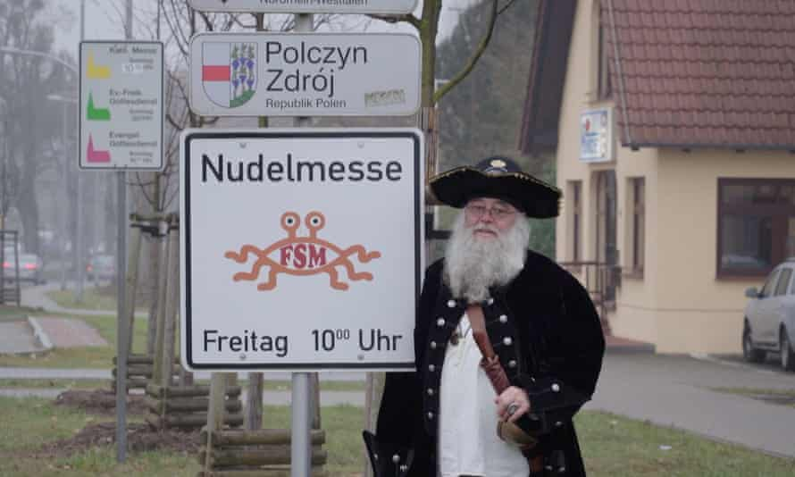
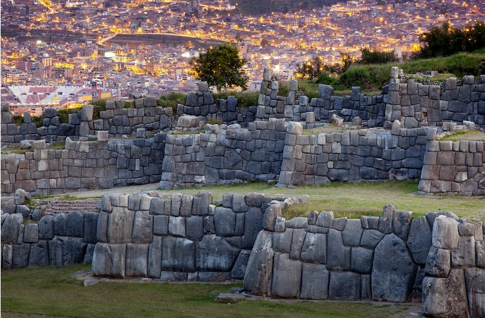
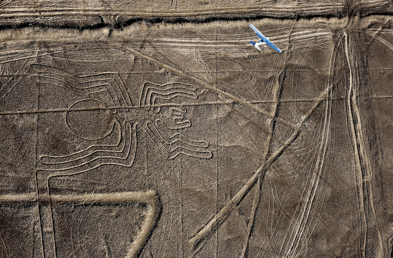
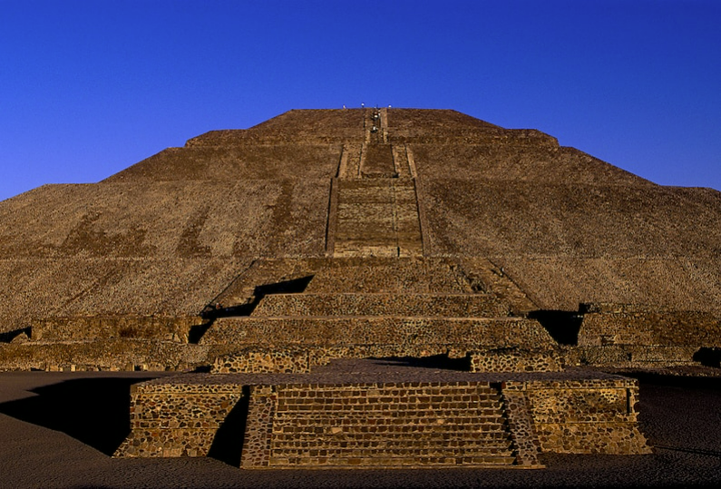
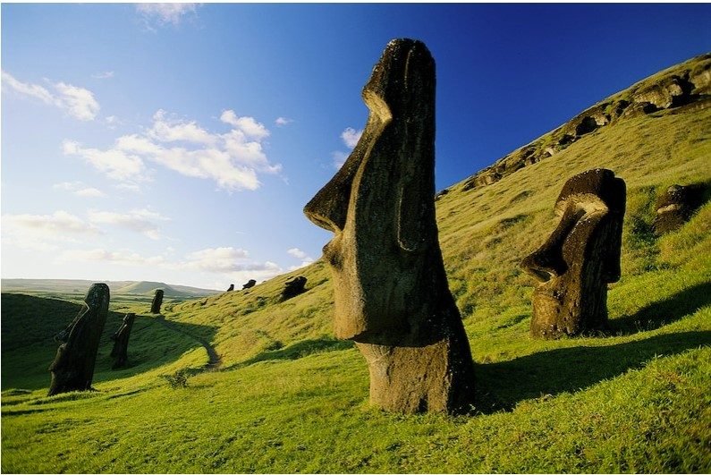
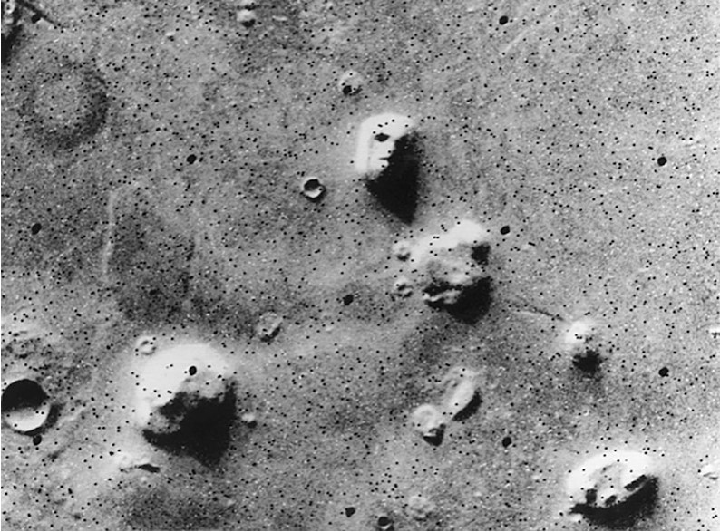
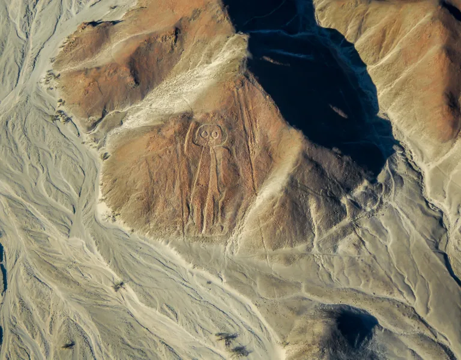

The purpose of this web site is to explore various types of typographic and layout
style for text documents, as an end-of-course project for the "Information Modeling
and Web technologies" course of the Master Degree in Digital Humanities and
Digital Knowledge of the University of Bologna, under prof. Fabio Vitali.
The documents contained in this web site have been selected for their length and
complexity from XXX. Their publication here is not intended to be an alternative or
replace their original locations:
By now, you’ve probably heard of QAnon, the internet conspiracy theory that has taken hold among many on the American right.
But you may still have questions about what exactly is going on.
QAnon was once a fringe phenomenon — the kind most people could safely ignore. But recently, it has gone mainstream. In 2020, QAnon supportersflooded social media with false information about Covid-19, the Black Lives Matter protests and the presidential election, and recruited legions of new believers to their ranks. A December poll by NPR and Ipsos found that 17 percent of Americans believed that the core falsehood of QAnon — that “ group of Satan-worshiping elites who run a child sex ring are trying to control our politics and mediaa” — was true.
QAnon has also seeped into the offline world. Followers of the movement participated in the deadly Capitol riot in January, and other QAnon believers have been charged with violent crimes, including kidnappings, assassination plots and the 2019 murder of a mafia boss in New York. A terrorism bulletin issued by the Department of Homeland Security in late January warned of increasing violence from domestic extremist groups, including conspiracy theory communities like QAnon.
QAnon has also made inroads in Republican politics. Representative Marjorie Taylor Greene, a first-term congresswoman from Georgia, has become the most prominent QAnon-affiliated lawmaker in the country. (Ms. Greene, who posted in support of QAnon on social media, has said she regrets her posts, but continues to promote many QAnon-supported conspiracy theories.) Elected Republicans at the state and local levels have also expressed support for QAnon.
QAnon is an incredibly convoluted theory, and you could fill an entire book explaining its various tributaries and subtheories. But here are some basic things you should know.
What is QAnon?
QAnon is the umbrella term for a set of internet conspiracy theories that allege, falsely, that the world is run by a cabal of Satan-worshiping pedophiles.
QAnon followers believe that this cabal includes top Democrats like President Joseph R. Biden Jr., Hillary Clinton, Barack Obama and George Soros, as well as a number of entertainers and Hollywood celebrities like Oprah Winfrey, Tom Hanks and Ellen DeGeneres and religious figures including Pope Francis and the Dalai Lama. Many of them also believe that, in addition to molesting children, members of this group kill and eat their victims to extract a life-extending chemical called adrenochrome.
According to QAnon lore, former President Donald J. Trump was recruited by top military generals to run for president in 2016 to break up this criminal conspiracy and bring its members to justice. Many of these cabal members will soon be arrested, the theory goes, and some will be imprisoned at Guantánamo Bay, while others will face military tribunals and be executed.
Is that all?
Not by a long shot. Since it began, QAnon has incorporated elements of many other conspiracy theorycommunities, including claims about the assassination of John F. Kennedy, the existence of U.F.O.s, and the 9/11 “truther” movement.
QAnon Anonymous, a podcast about the QAnon movement, calls QAnon a “big tent conspiracy theory” because it is constantly evolving and adding new features and claims. But the existence of a global pedophile cabal is the core tenet of QAnon, and the one that most, if not all, of its followers believe.
Since the 2020 election, QAnon has also become a stronghold of support for the false theory that the election was stolen from Mr. Trump. Some QAnon believers maintain that he is still the lawful president, although some have reluctantly accepted the reality that he is not.
How did this all start?
In October 2017, a post appeared on 4chan, the notoriously toxic message board, from an anonymous account calling itself “Q Clearance Patriot”. This poster, who became known simply as “Q”, claimed to be a high-ranking government insider with access to classified information about Mr. Trump’s war against the global cabal
“Q” predicted that this war would soon culminate in “The Storm” — an appointed time when Mr. Trump would finally unmask the cabal, punish its members for their crimes and restore America to greatness.
Why is it called ‘“The Storm”’?
Mr. Trump made a remark with senior military leaders in 2017 that QAnon believers have pointed to as proof of his plan to break up a cabalPool photo by Andrew Harrer
It’s a reference to a cryptic remark Mr. Trump made during an October 2017 photo op. Posing alongside military generals, Mr. Trump said, “You guys know what this represents? Maybe it’s the calm before the storm.”
QAnon believers pointed to this moment as proof thatMr. Trump was sending coded messages about his plans to break up the global cabal.
Who is Q, and what are ‘Q Drops’?
Q’s identity is still unknown, although there have been hints and speculation about it for years. Some speculate that a single internet troll has been posting as Q the entire time; others say that multiple people are involved in posting as Q, or that Q’s identity has changed over time.
Making things more complicated is that Q’s online home base has changed several times. Q’s posts originally appeared on 4chan. Then they moved to 8chan, where they stayed until that site was taken offline last year after the El Paso mass shooting. They now live on 8kun, a site run by the former owner of 8chan. Each of these sites uses a system of identity verification known as a “tripcode” — essentially, a username that proves that a series of anonymous posts were written by the same person or people.
“Drops”"" are what QAnon followers call Q’s posts. There have been nearly 5,000 of them so far, and most take the form of a cryptic coded message.
Like What?
Here’s an example of a Q drop from September 2018:
PANIC IN DC
Person Talking
Phrase
Coded References
[LL]
TRUTH reveal TARMAC [BC]
[LL] - Loretta Lynch, President Obama’s former attorney general, [BC] - Bill Clinton<
[LL]
TRUTH reveal COMEY HRC EMAIL CASE?
[LL] - Loretta Lynch, President Obama’s former attorney general, [HRC] - Hillary Rodham Clinton
[LL]
TRUTH reveal HUSSEIN instructions re: HRC EMAIL CASE?
[LL] - Loretta Lynch, President Obama’s former attorney general, [HRC] - Hillary Rodham Clinton, [HUSSEIN] - President Obama
[LL]
TRUTH reveal BRENNAN NO NAME COORD TO FRAME POTUS?……………..FISA = START
[LL] - Loretta Lynch, President Obama’s former attorney general, [BRENNAN] - John Brennan, the former director of the Central Intelligence Agency, [POTUS] - President Trump, [FISA] - Foreign Intelligence Surveillance Act
FISA BRINGS DOWN THE HOUSE.WHEN DO BIRDS SING?
Q
In this post, you can see coded references to “LL” (Loretta Lynch, President Obama’s former attorney general), “BC” (Bill Clinton), “HRC” (Hillary Rodham Clinton), and “HUSSEIN” (President Obama), along with references to John Brennan, the former director of the Central Intelligence Agency, the Foreign Intelligence Surveillance Act, and “POTUS” — President Trump.
Many QAnon followers use "Q drop" apps that collect all of Q’s posts in one place, and alert them every time a new post arrives. (One of these apps hit the top 10 paid apps in Apple’s App Store before it was pulled down for violating the company’s guidelines.) They then post these drops in Facebook groups, chat rooms for the Discord chat app and Twitter threads, and begin discussing and debating what it all means.
Q’s account has been quiet in recent months, and has posted only a few times since Mr. Trump’s election loss in November. Many QAnon believers hope that Q will return someday, although others maintain that the movement no longer needs Q as a central figure.
How many people believe in QAnon?
It’s hard to say, because there’s no official membership directory, but the number is not small and is probably in the millions.
Before Facebook moved to block QAnon content, some popular QAnon groups on the platform had hundreds of thousands of members, and NBC News reported last year on an internal Facebook study that found thousands of QAnonpages and groups operating on the social network, with millions of members between them. Twitter removed more than 70,000 QAnon-affiliated accounts after the Jan. 6 Capitol riot. And some YouTubevideos explaining the tenets of QAnon garnered millions of views before they were taken down last year.
And that’s just the content that is explicitly pro-QAnon. There are likely millions more people who believe in QAnon-related conspiracy theories, like the “Save the Children” movement that erupted in 2020 after QAnon believershijacked a hashtag campaign for a legitimate anti-trafficking organization and turned it into a recruiting drive that introduced millions of people to QAnon theories.
Who believes in QAnon?
It’s a more diverse group than you might imagine. The earliest adherents were mainly far-right Trump supporters, but in 2020, the movement expanded its reach to include health-conscious yoga moms, anti-lockdown libertarians and evangelical Christians. Unlike the stereotypes of extremist movements, QAnon doesn’t appear to be primarily dominated by young men, or people experiencing economic pain. There are Harvard graduates and Wall Street executives who believe in it, as well as people with less elite pedigrees.
QAnon has also developed an international presence, and has been embraced by conspiracy theorists and far-right extremists in countries including the United Kingdom, Germany and Japan.
Is QAnon the same thing as Pizzagate?
Yes and no. QAnon has been described as a “big-budget sequel” to Pizzagate, because it takes the original Pizzagate conspiracy theory — which alleged, falsely, that Mrs. Clinton and her cronies were operating a child sex-trafficking ring out of the basement of a Washington, DC, pizza restaurant — and adds many more layers of narrative on top of it. But many people believe in both theories, and for many QAnon believers, Pizzagate was a kind of gateway to the larger world of right-wing conspiracy theories.
One new element in QAnon is a number of clear and specific predictions about when and how “The Storm” would play out. For years, Q has predicted that mass arrests of cabal members would occur on certain days, that certain government reports would reveal the cabal’s misdeeds and that Mr. Trump would coast to a landslide re-election.
None of those predictions came true. But most QAnon believers didn’t care. They simply found ways to reframe the narrative and ignore the discrepancies, and moved on.
Why are some people attracted to the QAnon movement?
A common misconception is that QAnon is purely a political movement. But it functions, for people who believe in it, as both a social community and a source of entertainment.
Some people have compared QAnon to a massive multiplayer online game, because of the way it invites participants to cocreate a kind of shared reality filled with recurring characters, shifting story lines and intricate puzzle-solving quests. QAnon has also been compared to a church, in that it provides its followers with a social support structure as well as an organizing narrative for their everyday lives.
Adrian Hon, a game designer who has written about QAnon’s similarity to alternate-reality games, says that believers “open a fascinating fantasy world of secret wars and cabals and Hillary Clinton controlling things, and it offers convenient explanations for things that feel inexplicable or wrong about the world.”
What role have social networks played in QAnon’s popularity?
Even though Q’s posts appear on fringe message boards, the QAnon phenomenon owes much of its popularity to Twitter, Facebook and YouTube, which have amplified QAnon messages and recommended QAnon groups and pages to new people through their algorithms.
In recent months, many leading social networks have taken steps to ban QAnon content from their services, citing the theory’s potential for offline harm. In October, Facebook and YouTube both announced wide-ranging QAnon bans, and removed thousands of accounts, pages, and channels from their platforms. Twitter has banned thousands of QAnon accounts for engaging in coordinated harassment. And several smaller platforms, such as Etsy, Pinterest, and Discord, have also taken steps to limit QAnon’s QAnoninfluence..
How did QAnon believers respond to Mr. Trump election loss?
Mr. Trump is the central and heroic figure in QAnon’s core narrative — the brave patriot who was chosen to save America from the global cabal. As a result, most QAnon believers expected that he would easily win re-election, and spend his second term vanquishing the “deep state” and bringing the satanic pedophiles to justice.
After Mr. Trump’s election loss in November, many QAnon believers rallied behind the false theory that the election was stolen from him. Many expected that on Inauguration Day,Mr. Trump would not actually leave office as scheduled but would declare martial law, announce mass arrests of Democrats and stop Joseph Biden from taking office.
When that didn’t happen, many QAnon believers grew disillusioned, and some even realized they had been duped. But others continued to believe that “The Storm” was still approaching, and maintained that Mr. Trump was still planning a triumphant comeback.
Haven’t there always been far-fetched conspiracy theories about powerful elites?
It’s true that much of QAnon’s subject matter is recycled from earlier conspiracy theories, and is rooted in anti-Semitic tropes that date back centuries. But QAnon is fundamentally an internet-based movement that operates in a different way, and at a different scale, than anything we’ve seen before.
For starters, QAnon is deeply participatory, in a way that few other popular conspiracy theories have been. Followers congregate online to decode the latest Q posts, discuss their theories about the news of the day, and bond with their fellow believers.The Atlantic has called it “the birth of a new religion.”
There’s also the basic danger of what QAnon followers actually believe. It’s one thing to have a polarized political discourse with heated disagreements; it’s another to have millions of Americans who think, with complete sincerity, that the leaders of the opposition party are kidnapping and cannibalizing innocent children.
Combine those violent, paranoid fantasies with the fact that QAnon followers have been charged with committing serious crimes in Q’s name, and it’s no wonder people are worried.
Kevin Roose is a technology columnist and the author of “Futureproof: 9 Rules for Humans in the Age of Automation.” @kevinroose - Facebook
A version of this article appears in print on Aug. 19, 2020, Section B, Page 1 of the New York edition with the headline: What Is QAnon, the Conspiracy Swarm?.
Some time next year, the European court of human rights will decide on the case of a Dutch woman who feels unfairly treated because her country’s highest court has told her she cannot wear a plastic colander on her head for her ID photo.
It may combine Mienke de Wilde’s plea with that of an Austrian former MP, Niko Alm, who proudly wears the offending kitchen utensil on his official documents but now insists his country recognise Pastafarianism – the faith both follow – as a religion.
Watching the pair closely is Mike Arthur, an independent American film-maker whose smart, funny but above all thought-provoking documentary, I, Pastafari, about the world’s fastest-growing faith premieres in the US in October.
All in all, it is shaping up to be quite a big few months for the Church of the Flying Spaghetti Monster, whose believerswear strainers on their heads in homage to their deity, strive to be nice to pretty much everyone, and conclude their prayers with “r’amen” rather than “amen”.
It sounds, of course, like a joke. On one level, it is. But for Arthur, who has spent three years working on his film, and for many Pastafarians who believe their faith embodies some profound – and profoundly important – principles, it is a lot more.
“We live,” says Arthur, sitting in an Amsterdam cafe, “in the age of unreason. We no longer value the best idea, but the loudest idea. From Brexit to Trump, we applaud blind faith and are sceptical about overwhelming observable evidence.
“The problem is that rationality is just no match for irrationality. That ship sailed in 2016. People now don’t change their minds, they double down on their irrationality, and using facts, science and reason to contest the unreasonable is simply driving us all further apart. Maybe it’s time to try a different approach.”
A different approach is, undeniably, what Flying Spaghetti Monsterism offers. The church was founded in 2005 by Bobby Henderson, at the time a 25-year-old USphysics graduate, as a response to Christian fundamentalists demanding the teaching of creationism in Kansas school science classes. Its name is a portmanteau of pasta and Rastafarianism.
In an open letter, Henderson argued that if intelligent design was to be taught alongside evolution, so should the belief that, with the aid of His Noodly Appendages, an invisible and undetectable Flying Spaghetti Monster created the universe, probably after drinking heavily (thus explaining its many flaws).
Like other religions, the church has a gospel and, rather than commandments, eight “I’d really rather you didn’ts” (two having been lost). These suggest ways to live your life happily without infringing on others’ rights to do the same – a morality based on harmonious co-existence, nonjudgmental conduct “and generally not being a dick”.
Henderson’s basic point, expertly if satirically made, was that since intelligent design was every bit as much of an evidence-based theory as the unshakable belief that the world was created by an omniscient flying monster made of spaghetti, nothing should be taught in science classes but science.
Mathé Coolen, an archbishop of Pastafarianism, wearing his colander in court in a still from the documentary.Photograph:www.ipastafaridoc.com
But as it has grown – there are now Pastafarians from Poland to New Zealand and Italy to Taiwan, and the church is officially recognised in at least four countries – it has begun posing bigger questions: what actually is a religion? Who gets to decide that? And why should faith – or lack of it – have anything to do with rights?
For Derk Venema, an eloquent Dutch legal expert who has worked with De Wilde, his former student, to develop her arguments for wearing a colander on her driving licence photo, Pastafarianism raises genuine human rights issues – even if (or perhaps because) it is also satirical.
“I started out thinking this was just a big joke,” Venema says. “But the more you look at it, the more you see it is about fundamental principles. The Dutch courts have denied it has any serious message, but it manifestly does: non-violence, tolerance, loving each other – the same principles as many established religions.”
The European court has previously determined that to be recognised as such, a religion must be cogent, coherent, important to its followers, and “serious”. On the latter point, Venema argues that the humour and good fun of Flying Spaghetti Monsterism is simply a more modern, accessible way of getting its message across.
“I can imagine it all looks very odd if you’re not a believer. But that’s the case with many faiths – people who walk on water or split themselves in three, for example. Personally, I find other religions unbelievable.”
De Wilde reads the Gospel of the Flying Spaghetti Monster.Photograph: www.ipastafaridoc.com
Moreover, argues Venema, even theologians have “never really been able to agree on what constitutes a religion. So should the state really get to decide? For me, if it looks like a religion, with certain customs and traditions; if its followerscall it a religion; and if they call themselves believers, that should be it.”
Most importantly, in many societies belief in an established religion comes with certain privileges: from the right to sport religious headwear on your ID photo in the Netherlands, to faith schools in the UK and full-scale tax exemption for US megachurches. “We say, as long as there are special rights for believers, they should apply to all religions,” says Venema.
Alm, a journalist, writer, publisher and former MP, has fought his five-year court battle to get Pastafarianism recognised as a religion in Austria as part of a broader struggle for a true separation of church and state and genuine religious freedom – which, he argues, should include freedom from religion.
“All we ask is a level playing field,” he says. "Total neutrality of the state towards whatever belief I hold. We don’t want anything forbidden, but the law must apply equally to all of us, whatever we believe in and whether we believe nothing at all. Complete freedom of religion. It’s political.”
He readily concedes, however, that Flying Spaghetti Monsterism is a diverse church. “For some, it’s not a political thing at all. In some countries, Pastafarians mainly just want to have fun and eat pasta.”

Bruder Spaghettus, a leading German Pastafarian, by a ‘noodle mass’ sign in Templin outside Berlin.Photograph: www.ipastafaridoc.com
Arthur, whose film follows Venema and Alm through their court battles and also features Bruder Spaghettus, the luxuriantly bearded leader of the Kirche des Fliegenden Spaghettimonster in Germany, says Pastafarianism is like other religions, with a supernatural deity, a prophet, and lessons of morality in holy scriptures.
“Unlike other religions, it’s left out hate, bigotry, violence and dogma – its only dogma is that there is no dogma. But by challenging innocuous privileges like the right to wear religious headgear on an ID photo, it makes us think about others, like the right not to vaccinate your children, say, or to use tax-free income to buy private jets so you can fly round preaching science is a conspiracy.”
So Pastafarians, says Arthur, whose film premieres at the Nashvillefilm festival in the first weekend of October, “are actually saying, ‘Look, if no one’s going to talk to each other like adults any more, let’s try something else.’
“By putting their own beliefs on display, in a fun way, they make us think more deeply about ours. And in a time of flat-earthers, anti-vaxxers, fake news and alternative facts, they may just be the saviour we’ve been waiting for. R’Amen.”
Two-dimensional maps show the Earth as flat because it is impossible to show the entire surface with a photograph of a single globe. Credit: Getty Images
Michael Marshall, project director of the Good Thinking Society in the U.K., talks about flat Earth belief and its relationship to conspiracy theories and other antiscience activities.
Full Transcript
MM: So I'm Michael Marshall and I'm the project director of the Good Thinking Society, which is a charity based in the U.K.. Uh, the whole purpose of our charity is to promote science to challenge pseudoscience. So we'll do work, uh, to forward science education. And then another part of the, the work that we do, which is the bulk of my work, is to find ideas that aren't backed by evidence and find people who are promoting those ideas, find people who are buying into those ideas and to explore them and figure out if anything can be done to prevent people being confused by them, harmed by them misled by them in those kinds of things. So I spent a lot of my time looking at things like alternative cancer kills and the people who promote those and alternative medicine. I've spent a lot of my time going to see people who say they can talk to dead. Who say they can do faith healing.
And then another part of my, uh, my time is spent talking to people who believe in, uh, unusual ideas and who are kind of proponents of them. And that's how I came across the flat earth world, uh, is through my, uh, slightly odd, uh, hobby. Uh, at the time before I was working full time as a, as a skeptic, it was a hobby of mine to, um, be in rooms filled with people who disagree with me. To just understand what brings people to ideas that I would look at and say, well, this can't be true. These kinds of fringe and extreme and unusual beliefs. Um, what brings people to believe them and what kind of paths lead people there? What evidence supports, uh, supports their position in their minds and how do they engage with the world with that worldview and try and have conversations.
I've got a podcast where I talk to people who have kind of fringe beliefs and instead of having a conversation that a lot of people would have, if they are a skeptic about something and they're talking to a believer where you shout at them and tell them they're wrong and point out all the evidence and tell them, and it gets into quite a volatile discussion sometimes instead of that, I try and have a civil and polite chat to try and explore the gap between us. So I say, I don't believe in this idea of yours, but I'm really interested to figure out why I don't believe it and why you do so let's have a conversation. So I have these kinds of civil discussions and that's kind of how I came across a that the flat earth theory and the idea that there are people walking around today who think the world is flat.
SM: It's really interesting and serendipitous that we're sitting here because I knew that there was some flat earthers out there and I just thought it was kind of strange and funny. And about a week ago, I discovered a friend of mine who is very well educated, she's got a doctorate in biochemistry and, uh, she has a sister who's also very intelligent and very well educated. And my friend told me that her sister is a flat earther and that her sister is very indignant about the, uh, idea that, um, we don't take them seriously. And she said something to the effect of, this is hearsay that we're getting from me right now. That, well, you know, if you looked at the evidence, then you'd know that what you've been told isn't true. So all of a sudden I became fascinated with the flat earth people and then just on Twitter and I hadn't, I had not been a follower of yours until I saw this tweet that somebody I follow must've retweeted a, that you had just given a talk in Edinburgh where I had been. And, uh, so I reached out to you and it turns out you live in Liverpool and here I am in Liverpool today. So, uh, that's why we're here talking. So tell me what do the flat earth people, uh, think and why do they think it?
MM: So you've got to sort of unpack that question a little bit because it's very easy for us to see, uh, the flat earth movement as one singular cohesive movement. And that's how I first thought about it when I first came across it in 2013 and when I came across the Flat Earth Society in the U.K.. And so I had a conversation with the vice president of the Flat Earth Society. And I assumed, as you probably have in your mind, that people who believe the world is flat think that the world is a disc. And in the center you've got the Arctic circle, then you've got all the continents of the World sort of splayed out to fill the circle. And an Antarctica is like the edFlat Earth Society is that not everyone in the flat earth world has that version of the World in their heads.
Some do believe it's a disk, but others believe that, yes,there's Arctic circle in the middle and there's the land masses around it. And then on Antarctica is the ice around the edge, but instead of it being a discreet disc, some people believe, in fact Antarctica just goes on forever in all directions. And so they believe that the earth is actually an infinite plane in all directions. That bisect reality, which is a really lovely idea.
SM: What does that mean?
MM: So it will go on in North, South, East, West, just go on forever and there is the above and the below, but there's no way of getting from the top to the bottom because it's just infinity of all ice in all directions forever. So there's no way of getting below the earth. And so this was a, when I first came across the flat earth movement in 2013 this was quite a vociferous debate that was going on.
And it was quite a schism really. And so they had the, the Flat Earth Society at the time, it was largely a forum where they would bring forth their proofs of one version of this theory or another. And I also think there's another schism going on in the movement at the time, which is between one side, which are people who genuinely really believed the world was flat. And the other side, which absolutely did not believe it, but enjoy the intellectual pursuit of arguing a position they need to be false. And so they would find quite esoteric and off the wall proofs that most people wouldn't think of. And so when I first came across it in 2013 there were people waiting into these arguments who believed the world was round but had never thought about it before, but just assumed in a sort quite an arrogant way that they must know better than anybody who's ever thought about it and come to a different conclusion.
And so they were stomping into these arguments saying, well, what about photos of the earth from space and what about this? And what about ships going over the horizon thinking, well this is the gotcha, but not realizing that those were the first things they'd thought about, that they thought that the world, the approved world's round. And therefore it's probably likely that the people who think the world is flat, I've had the same idea and yet they're still people who think the world is flatflat earthers, so at least in their mind they must have a good answer to that. That the people who believe the world was round having these arguments didn't have cause they'd never scrutinized the idea. They rejecting it. And so what was happening was I think to a degree, the part of the schism that were just having fun and knew very well the world wasn't flat, but just enjoyed the pursuit of doing that.
They were winning those arguments with people who were coming in and arrogantly assuming that they could answer everything. And in winning those arguments, they were really converting even more people who really believed it. And so you had this kind of effect where it was sort of spiral out of control a little bit, but I think it wasn't, it wasn't viral in the way that in 2013 as a in the way that it was in 2016 and 2017 and I think part of that is because that esoteric off the wall version of proofs can be quite complicated to get your head around. So for example, if you have the disk version, the world and the infinite plane version, both models suffer from an inability to explain gravity. You don't have a spherical mass, you don't have a central mass, you don't have a central point pulling it all to one point.
So it's very difficult to explain gravity in either one of those models. But these people who were doing kind of esoteric arguments were saying, well, what is gravity? Gravity is an accelerant, falls towards the ground, I think 9.8 meters per second squared, accelerates downward. They said that is identical to a world in which the ground accelerates upwards to meet you. And so when you let go of something, it isn't that it's accelerating downwards, it's a, the ground's actually accelerating up to meet it.
SM: So it's a form of relativity.
MM: This is exactly where they come to. So people would then say, well, if it's, if the ground is the earth is, you know, an infinite plane in all directions that bisects reality and is accelerating upward at 9.8 meters per second squared and always has been since the Dawn of time, you'd hit a problem, which would be the speed of light.
You can't go fast. The speed of light. So people don't have a gotcha for this. And so the people who were putting forth esoteric off the wall trollish arguments would say, well, look at Einstein's theory of relativityas you approach Lightspeed, time itself slows down and the maths in their head works back out again. So yes,we're getting quicker, but time's getting slower and we can account for gravity in that way. And that's quite a complicated idea to get your head around. And so I think the fact that these people were winning arguments was getting, was converting some people to movement, but the way in which they were winning them were keeping people away from the movement because they were quite complex ideas. You couldn't stick them on a meme as you can these days. Here's a picture of the earth. You couldn't explain all that stuff about science, the relativity proven gravity and an infinite plane version of the world.
So I think there was a limiting factor going on and that's why when I first came across the flat earth movement, it was probably still pretty small, pretty unknown. I've been given talks about pseudoscience for the last kind of five, six plus years. And I've mentioned that I came across the flat earth movement and people would always say to me, there's nobody who actually believes that nobody actually, they don't really exist, that people are having fun. So it stayed quite small. And then in 2015 and 2016 a couple of things happened that really ignited a movement. And it was the publishing of two videos on YouTube or two video series on YouTube. Um, one I believe was, uh, Eric Dubay, 200 proofs. The earth is not spending globe. Uh, and the other was Mark Sargent's, uh, uh, 14 videos in his flat earth clues series.
SM: So now, we're going to actually be converting
more people.
MM: Well, it's, they are genuinely worth looking up because what I found really fascinating about the Eric Dubay 200 proofs, the are 200 of them in there, is that, uh, it was published in 2016 so it was three years after we had the, uh, infinite plane and the gravitational kind of explanation via Einstein's theory relative to, so it was three years of what you'd expect to be evolution and sophistication and, but in fact, proof number one, the horizon looks flat proof. Number two, even if you go up a mountain, the horizon looks flat. Proof number three, water, uh, cant stick to a curved surface. It always goes level and you can't get it. So there's no way it could stick to a ball. So they're all very, very simplistic arguments. And there's 200 of them. Um, some of them stick to sort of a pseudo physical properties. Others go to a conspiracy theory.
So I think proof 199 is saying that, well Isaac Newton and Neil Armstrong and Galileo, they were all Freemasons. Therefore the world is flat. And so you have this kind of a, this video and it was also published as a free ebook which collected lots of different so-called proofs of the world being flat that picked from lots of different genre of proof. So if you came to the flat earth, if you, if you were generally interested in conspiracy theory, you'd come to it and you'd find enough conspiracy theory reasons to believe the world is flat in there. If you came to it because you, uh, placed way too much emphasis on the, uh, the, the, your own powers of observation. You know, you can't show me the curve. I'm looking out at horizon. I can't see the curve. You can't tell me my eyes are wrong. If that's your, your style of thinking.
There were arguments in there for you that would tell you that that would support the idea of the world is flat. So I think it kind of covered all its bases a little bit. If you came from a fundamentalist Christian perspective, uh, in a biblical literalismthe world is 6,000 years old and created in seven days as per the Bible, uh, which a large part of, of flat earth movement is actually crash creationism in a, in another guys. Um, there were creationist arguments in there that would support, uh, the, the, the idea of the world is flat. So it really did pull together different genre of flat earth arguments into one document. And I think that's why it became quite successful because it had a little bit in for anybody who might be, uh, in any way inclined to doubt the veracity of the round earth theory.
SM: That inclination is usually a preexisting condition.
MM: I think so. I think so. So a lot of the way that people are stumped, we're coming across this information was through YouTube recommendations. Uh, this is, I think it was a study by the American Academy of sciences at their last kind of convention, which actually went there. The a scientist went along to the a U.S. flat earth convention and spoke to people there and asked, how did you get into the flat earth movement? And of the 40 people they asked, 39 of them said, I saw it recommended to me on YouTube. And the faulty of said, my son saw it, recommended to him on YouTube and pass it along to me. So it's what's appearing in that right-hand bar of up next on YouTube. So I think when there were people who were looking for moon landing denial videos, YouTube, once these Flat earth videos started getting out there and started having a sensationalist kind of style, so it'd have a sensationalist title, uh, there'd be people, people would come and watch it because they believed it.
Some people watch it cause they thought it was silly. Some people watched it because they wanted to scrutinize it on a point by point basis and watch it five times in a row to really get to the grips of every single argument. So they could write an article about how wrong it is. YouTube at the time said that it didn't say there's three distinct audiences with three distinct agendas. It says there's one audience of three times the size. So this is a pretty good video because loads of people are watching this all the way to the end. And so once YouTube saw that it started recommending it to people. So you'd be watching a video about moon landing denial and YouTube would say, I think someone who's a bit into moon landing denial might also be into the flat earth theory and it would float it there as a suggestion.
And if people clicked it, that solidified that link a little bit and the more people clicked it, the more that became solidified. And I think that's how a lot of people find their way in. And then it's because it became such a solid link. I think it even went beyond people who are already looking for conspiracy theory, uh, ideas. Um, you had people who'd be looking for videos of the, of the earth from space and they might see this video and then then they might watch it. And then that kind of strengthens those relationships. So YouTube had this kind of arguably accidental, I don't think they were deliberately doing it, but had this algorithm that was recommending sensationalist and extreme ideas regularly to people who were searching for things that weren't necessarily about that. And I think that did serve as a, as a recruitment tool and those two videos and the responses to those, those two videos and video series from Mark Sargent, Eric Dubay, that really ignited a movement because I think they came around with just the right time or the wrong time in our perspective, uh, that it captured, uh, that YouTubealgorithm in full flow.
SM: Uh, so what do just, I'm interested specifically in the videos you say of, uh, the earth from space or the moon. What's the response? Those are all faked?
MM: Yeah, pretty much. So, uh, I, I've, I've had lots of conversations with flat earthers and when you bring up those visual pieces of evidence, they'll say, well come on, you can't trust visual evidence. And they say photographs for example, you show me a photograph from of the, of the earth from space. I'll show you a composite job, I'll show you a Photoshop job, I'll show you a hoax. And they'll say that NASA even admits that those four photographs are composites, is that, will they are composites. But even if they are, composites, they're composites of what their comes into photos taken from space. It's just they're taken with a camera that isn't far enough away to get the entire earth and in one goal. But you're going to see snapshots of the earth and then you come, you compose those together because you've got a two dimensional representation of a three dimensional object.
You're going to have to sort of stitch those together a little bit, but just cause it's a composite, it's gotta be it composed of something you're saying. It's a composite doesn't throw out the fact that this is actually a genuine photo as well. Um, and so they will talk a lot about how, uh, we can't trust NASA. That's a big, big part of it. NASA is part of the conspiracy, some lots of the flat earthers that I've met, I went along to the U.K.flat earth convention and spent three days in a hotel in Birmingham with 160 flat earthers, one of the most genuinely enjoyable weekends of my entire life. Really, really fun. Um, and I went there not to tell them they're wrong and not to be superior, but to really understand what brings people to that movement. Um, but what I heard lots of time was that well, NASA is evil.
NASA is a tool of the government, a tool of the Illuminati, a tool of the new world order. Um, they rely on their budgets so they need to keep that money rolling in, which is why they keep churning out material that suggest the world is round. Um, some people even believe that NASA is a tool of Satan. Uh, and they have all sorts of convoluted uh, explanations as to why that is. Uh, one of my favorite explanations was one of the speakers at the flat earth convention an Argentinian conspiracy theorist who said, we know for a fact that the UN is a front for the one world order because if you look at the Spanish name for the UN , it is the O N U and if you read that backwards it's U N O which is Spanish for one. And therefore we know for a fact the UN is a, a front for the one world order because the reverse name of it in Spanish is Spanish for one.
And my friend I was at the convention with leftover and said does he realize thatUN is already French for one?
SM: That logic that numerology, when you connect the dots like that is so it's so intriguing.
MM: It is. And so they'll see that and they'll say, well, look at the, uh, look at the image, the logo of the UN and you have the flat earth, you have the Arctic circle in the middle, you have all the continents around it. And so let's say, why would the UN have the flat earth as their logo? If it isn't true that the world is flat? And I had this conversation with the flat earther and I said, well, what else would you want the UN's logo to be? And it's, well you could, if the earth is really round, you'd show it from the side.
Okay, but then which countries are you not putting on? Do you want to show America and not Europe? Do you want to show the Northern hemisphere and not show Australia? Right? And so he said, well, okay, fine. So you show up from the top. But if that's the case, why isn't that Antarctica on the UN's logo, it's missing. And his idea for that is because Antarctica is either the disk around the edge or it's where the dome that surrounds the world is. And I said, well, Antarctica isn't a nation. This is the United Nations. It isn't a nation. You know, there's good reasons. If you, if you sort of sense check these ideas, but if you're presented them in a way that says the UN is a front for the Illuminati and the one world order, and here's proof, look at their logo, therefore flat and you're not, then encouraged to sense check your ideas to uh, to look for ways to doubt yourself, to look for ways to disprove your theories rather than looking for evidence that proves them.
You end up in a place where all you're doing is confirming your ideas further and further and further. And this is what we see. We see it in our lives all the time and we're guilty of it all the time. But I think we're guilty of this. This is a movement that's specifically guilty of it.
SM: Does Heliocentrism hold and the other planets are flat disks or something as well or are they?
MM: yeah, it depends on who you talk. So it's not just that there's the disk version and the infinite plane version. There's actually lots of, there's a myriad of different versions of the, the flat earth and the universe beyond it. So some will believe that we're flat. But the universe around it is pretty much as is, that's quite a niche belief in the flat earth world. Um, some believe that, uh, many believe the sun isn't very far away, so it's very hard to, to uh, justify the solar system as conventional science would have it with a flat earth belief, especially a flat earth belief that may be rooted in creationism and therefore has this kind of earth as the center of everything kind of way.
And you know, the sun was created on, on one of the days after the earth, it was already created. And so some of that belief that instead of the sun being millions and millions of miles away, it's actually quite nearby and much smaller. And that's how they account for time differences across, uh, across the world. How you account for seasons, it's just that you're further away from the sun at that point. Um, others believe that the world is a disk, but it's under a dome. Um, which again goes back to the biblical idea of the firmament from and being the roof on top of the world. Um, one of the, one of the, the, uh, piece of evidence I've heard brought, uh, for that, uh, firmament idea for that domed theory. A idea was from Mark Sargent who said, uh, if you look at the gravestone of Werner Von Braun, so Von Braun, obviously the, uh, the, the Nazi scientist smuggled out of Germany after the second world war by operation paperclip installed towards the head of the U.S. space program. Um, his V2 rocket technology is partly responsible for, for America getting into it, getting to the moon first. Um, but if you look on his gravestone, it references Psalms 19 one. And if you look up Psalms 19 one, it reads, the heavens declare the glory of God and the firmament showeth his handiwork. So it says Mark Sargent, why would the father of space exploration have on his gravestone a reference to the biblical roof on top of the world, if not a post deathbed confessional? Here's what of saying, there is a firmament and the only way to get me out of Germany was to go along with their hoax.
Now I would argue the reference is much more about the first bit of the heavens declare the glory of God for a man who saw his technology has been the key to the heavens. It was the, the way that men put mankind, unlocked the sky. Um, but if you're a flat earther or you see that gravestone, and this is proof then that there is a roof on top of the world and if you believe there's a roof on top of the world, then it starts to ask questions about what is space beyond it. And so I spoke to Mark Sargent about this and he said, well, the sun or moon is still there, but they're much closer and they're separate bodies with their own separate light sources. And the way we know that, he said, it's because sunlight is warm and Moonlight is cold. And I said, what do you mean by that?
He said, well, sunlight, obviously warms you. He said, yeah, that wasn't a bit undisputed. Uh, he said, Moonlight. He said, if you go out in the night with a thermometer and you put that in shadow and take a temperature reading, and then you move it away from the shadow into the open clearing and then take a temperature reading, the temperature drops. And that's because the Moonlight is cooling the thermometer down. Well, what's actually happening is your first temperature reading is in shadow and therefore in a shaded area. And then to get into Moonlight, you have to move it out of a shaded area and expose it to whatever, whatever other winds and things you have. And that's a, that's the reason for it". Um, and so when, my favorite things about Mark Sargent 's theory actually is that like many flat earthers, he was a conspiracy theorist who believed in all sorts of conspiracies beforehand.
So, uh, JFK was assassinated by the government or by an insight. It was an inside job. The moon landing was never real. Uh, he believed there was a civilization used to live on Mars who carved a face on a rock on Mars. All the, all the kind of classic stuff. And so when I spoke to Mark, I thought one of the ways to try and understand, um, what counts as a standard of evidence and how do you sense check? I thought I'd ask him, was there ever a conspiracy theory that you used to believe in that you now no longer believed to be true? And I thought maybe this will help me understand where you can come back from an idea. He said, well, it's funny because I used to, he said, I used to always wonder why are all these different conspiracies true? And then I realized the world is flat.
It all made sense because I thought, why did the government killed JFK? It's because they knew that we couldn't get to the moon. So the moon landing had to be faked because you can't get past the firmament because the world is flat and under a dome. So he said it was like, um, the, uh, the, the flat earth is kind of the Rosetta stone of conspiracy theories to a degree. It makes all the rest of it make sense. But he said there's one thing that no longer makes sense to me because I no longer believe that there's a face on Mars. And I want to meet the guy who came up with that cause I really want to know who's behind him. And I said, yeah, that's cause you no longer believe in Mars. That's cause you believe that the planets and the stars are just projections on the dome. So you have a different view of the universe depending on what version of a, of the flat earth you, uh, you believe in.
SM:What are some of the,um, most popular, um, conspiracy theories? You know, the, the flat earthers also believe in, are they anti vacs predominantly?
MM:Yeah. So this is where I think it gets quite important for me because, uh, when I spent time at the, at the, the flat earth convention, when I've talked to flat earthers and then talk to people who are, you know, scientists and skeptics about it, they all say, well, at least the flat earth is harmless. And I think the problem is, uh, the flat earth beliefs don't exist in isolation. So one of things that really surprised me actually at the, at the convention that I went to was how little material was about the flat earth. So the Argentinian, uh, conspiracy theorist that was presenting that I mentioned before, he was talking not only was the a one world order and Illuminati that was, you know, run by Satan and, and various of the tools of Satan. But he was also pointing out how dinosaurs were faked and how it was a, the dinosaurs were invented by an artist who looked at, who looked at our giraffes and rhinos and crocodiles and sort of mixed the three together to create dinosaurs. But he also said, if you want to know who's really got the, what's really going on behind the world, read the book, the protocols of the elders of Zion and that will tell you what's going on. And
SM: There you go. Now, now you're really at the end. One of the good roots.
MM: Totally. And what surprised me was I was shocked to hear this hugely influential antisemitic hoax document. Uh, the protocols, elders designer, a fake that was created to stir antisemitism. I was shocked to hear that brought up on stage at this convention where I was expecting to hear about the flat earth, but I think I was the only one who was shocked. No one else seemed to bat an eyelid. And so we do see these different conspiracy theories clustering together. And uh, I spoke to a journalist actually at the, at the convention that weekend and they were having a lovely old time interviewing people saying, Oh, isn't this fun? Isn't it silly? Said, well, it is fun, but if you really want to know what's going on, just see that couple over there with the baby. Ask them if the baby's vaccinated, ask them in that baby was ill tomorrow.
Would they go and see a doctor or would they believe that big pharma is a tool of oppression and evil and moneymaking, all this kind of stuff. You know, one of the speakers at the convention, as well as being a flat earther and as well as being a nine 11 truther also believes that you can cure all manner of diseases, including HIV and AIDS by drinking or injecting your own urine. And this is, these are ideas, these are the ideas that are sort of bedfellows. And so I think a flat earth is in some ways, it's just the most visible of a, an ecosystem of conspiracy theory. Uh, and I think if you really want to try and, uh, help people challenge their own beliefs in the flat earth, you have to see it as such. You can't see it in isolation. You have to try and look at the, the wider pattern that it fits within.
SM: Uh, this is so fascinating. Um, and you're obviously a tremendous talker. So why don't you, why don't you promote your podcast.
MM: I've got a couple of things that I do, but the one in which I talk to people who, uh, who put forward ideas that I disagree with is called be reasonable with the idea being that I'm there to be reasonable to put forward a reasonable face to it. And so, um, I've talked to all manner of people from people who believe the world is flat to people who believe the world is hollow. I wish that's a really interesting interview because that goes in places in, in, in the same way that you might not associate, uh, antisemitic hoaxes with the flat earth belief. The hollow earth belief goes into some of the key risk positions too. And that's well worth the listen. Um, and I've interviewed people who believe they can talk to the dead and, and many of the things like that. But I've also interviewed people who are promoting, uh, the drinking of bleach as a cure for cancer, uh, and people who are putting forward white supremacists beliefs, uh, anti-feminist beliefs and some pretty extreme positions.
And the, the, the idea of the show really is to kind of understand the way we as people structure our beliefs. Cause I think the structuring of belief is very, uh, is very similar. The details of the beliefs change. And I think that flat earth is a, is a great way of examining the, the, the nature of belief, um, untainted by the possibility that it might be true. And then once you, once you really examine that and understand that once you've understood that the factors that influence people's beliefs, you can sort of lift that entire framework up and then lay it over some of these other beliefs that are much harder to point to a single fact that disproves it. So I think, yeah, understanding people who hold fringe or extreme positions is a useful thing. If we want to try and limit their influence and bring people back to a more reasonable position.
SM: And, of course, bleach is back in the news, as some people have been recommending it as an anti-coronavirus gargle. Do not, under any circumstances, do that.
That’s it for this episode, get your science news at our website, www.scientificamerican.com. Where all of our coronavirus coverage is out from behind the paywall, available free.
And follow us on Twitter, where you’ll get a tweet whenever a new item hits the website. Our twitter name is @sciam. For Scientific American’s Science Talk, I’m SM, thanks for clicking on us.
Clouds roll over Easter Island's monolithic statues.
PHOTOGRAPH BY CHRISTIAN HEEB, LIAF/REDUX
TRAVEL
7 Ancient Sites Some People Think Were Built by Aliens
These spots might not have been crafted by extraterrestrials, but that doesn’t mean they’re not out of this world.
BY NADIA DRAKE
PUBLISHED OCTOBER 26, 2017• 13 MIN READ
Planet Earth is home to some spectacular relics from bygone eras, constructions that seem to defy the technological capabilities of their time either because they’re too big, too heavy, or too complex.
As such, some suggest the ancient builders of the Egyptian pyramids, the Nasca lines, and others were following an extraterrestrial instruction manual. Perhaps the hands that crafted these sites weren’t really of this world.
To be sure, it’s fun to think about whether aliens have visited Earth. After all, humans are on the threshold of expanding our reach in space, and places like Mars are in our sight. But the truth is,there’s no evidence suggesting that aliens have ever been here. And invoking a supernatural explanation for some of the most monumental of human achievements means skipping over the fascinating ways in which prehistoric civilizations managed to make some of the largest and most enigmatic constructions on Earth.
Sacsayhuamán

The ancient fortress of Sacsayhuamán contrasts with Cusco's modern buildings.
PHOTOGRAPH BY HEIKO MEYER, LIAF/REDUX
Outside the old Inca capital of Cusco, a fortress called Sacsayhuamán rests in the Peruvian Andes. Built from enormous stones that have been chiseled and stacked together like a jigsaw puzzle, some say Sacsayhuamán could be the work of an ancient civilization that had a little help from interstellar friends.
The 1,000-year-old interlocking fortress walls are made of rocks that weigh as much as 360 tons each, and which were carried more than 20 miles before being lifted and fit into place with laser-like precision.
How an ancient culture accomplished such a feat of engineering is a fun little problem to solve; turns out the Inca were as adept at building houses and fortified complexes as they were at watching the sky and keeping calendars. In fact, Sacsayhuamán isn’t the only example of this intricate masonry: Similar walls exist throughout the Inca Empire, including one in Cusco where a 12-angled stone has been carefully wedged into place.
More recently, archaeologists have uncovered traces of the rope-and-lever system the Inca used to transport stones from their quarries to their citie—a system that relied on strength and ingenuity, rather than alien architects.
Nasca lines

A plane glides over an ancient spider geoglyph in the Peruvian desert.
PHOTOGRAPH BY ROBERT CLARK, NAT GEO IMAGE COLLECTION
On a high and dry plateau some 200 miles southeast of Lima, more than 800 long, straight white lines are etched into the Peruvian desert, seemingly at random. Joining them are 300 geometric shapes and 70 figures of animals, including a spider, monkey, and hummingbird.
The longest of the lines run straight as an arrow for miles. The biggest shapes stretch nearly 1,200 feet across and are best viewed from the air. Scientists suspect the Nasca drawings are as many as two millennia old, and because of their age, size, visibility from above, and mysterious nature, the lines are often cited as one of the best examples of alien handiwork on Earth. Otherwise, how would an ancient culture have been able to make such huge designs in the desert without being able to fly? And why?
Turns out, it’s rather easy to understand the how. Called geoglyphs, these enigmatic designs are made by removing the top, rust-colored layer of rocks and exposing the brighter white sand underneath.
The why is a bit tougher to comprehend. First studied in the early 1900s, the designs were initially suspected to be aligned with constellations or solstices, but more recent work suggests the Nasca lines point to ceremonial or ritual sites related to water and fertility. And in addition to being visible from the air, the shapes can be seen from surrounding foothills.
Egyptian Pyramids
The sun sets over the Giza necropolis on the outskirts of Cairo, Egypt.
PHOTOGRAPH BY EZEQUIEL SCAGNETTI, REDUX
Just outside Cairo, in Giza, the most famous of Egypt’s pyramids rise from the desert. Built more than 4,500 years ago, the Pyramids at Giza are monumental tombs where ancient queens and pharaohs were buried.
But how, exactly, did the Egyptians build these things? The Great Pyramid is made of millions of precisely hewn stones weighing at least two tons each. Even with today’s cranes and other construction equipment, building a pyramid as big as that of Pharaoh Khufu would be a formidable challenge.
And then there’s the astronomical configuration of the pyramids, which is said to align with the stars in Orion’s belt. As well, alien theorists often point to the fact that these the pyramidsthree pyramids are in way better shape than others built centuries later (never mind the amount of work that has gone into preserving them over the past several centuries).
So are Egypt’s pyramids artifacts of aliens? Not exactly. It’s true that scientists aren’t quite sure how the ancient Egyptian built the pyramids—and especially how they did it so quickly—but there’s ample evidence that these tombs are the work of thousands of earthly hands.
Stonehenge
Bands of pink and purple streak the sky over Stonehenge at dawn.
PHOTOGRAPH BY PHILIP KRAMER, GETTY IMAGES
A huge circle of stones, some weighing as much as 50 tons, sits in the English countryside outside Salisbury. Known as Stonehenge, the Neolithic monument inspired Swiss author Erich von Däniken to suggest it was a model of the solar system that also functioned as an alien landing pad—after all, how else could those massive stones have ended up hundreds of miles from their home quarry?
No one knows what, exactly, the meaning of Stonehenge is, but, as with all the other sites in this collection, the explanation is not aliens. Instead, scientists have demonstrated it’s actually possible to build such a thing using technologies that would have been around 5,000 years ago, when the earliest structures at the site were built.
And now, it appears as though the stones are aligned with solstices and eclipses, suggesting the Stonehenge builders were at least keeping an eye on the heavens, even if they didn’t come from above.
Teotihuacán

Teotihuacán’s Pyramid of the Sun rises up against the cobalt sky in Mexico City.
PHOTOGRAPH BY ROBERT FRIED, ALAMY STOCK PHOTO
Teotihuacán, meaning the "City of the Gods," is a sprawling, ancient city in Mexico that’s best known for its pyramidal temples and astronomical alignments. Built more than 2,000 years ago, Teotihuacán’s age, size, and complexity can make it seem otherworldly, but it’s very much the work of humans.
Scientists suspect that over centuries, a mix of cultures including Maya, Zapotec, and Mixtec built the city that could house more than 100,000 people. With its murals, tools, transportation system, and evidence of advanced agricultural practices, Teotihuacán is often considered much more technologically developed than should have been possible in pre-Aztec Mexico.
By far, the most well known of Teotihuacán’s buildings is the massive Pyramid of the Sun. One of the largest such constructions in the Western Hemisphere, the pyramid’s curious alignment is believed to be based on calendrical cycles.
Easter Island

Moai dot the grassy hills of Easter Island, a Chilean territory located in the southeastern Pacific.
PHOTOGRAPH BY JOCHEM D. WIJNANDS, GETTY IMAGES
The enigmas surrounding the moai, Easter Island’s fleet of large stone figures, pretty much follow the same narrative as the other sites described here: How in the world did the Rapa Nui make these figures more than 1,000 years ago? And how did the moai end up on Easter Island?
Carved from stone, the nearly 900 human figures are sprinkled along the flanks of the island’s extinct volcanoes. The figures average 13 feet tall and weigh 14 tons and appear to have been chiseled from the soft volcanic tuff found in the Rano Raraku quarry. There, more than 400 statues are still in various states of construction, with some completed figures awaiting transportation to their intended resting place.
The reasons for carving the moai are mysterious, though they were likely sculpted for religious or ritual reasons. It’s also not exactly clear what happened to the stone-crafting Rapa Nui, but a leading theory suggests their civilization succumbed to an environmental disaster of their own making … which is something that probably could have been prevented had ancient aliens bestowed their infinite wisdom upon the culture.”
The Face on Mars

NASA's Viking 1 orbiter took this photograph of Mars in 1976. Shadows in the rock formation create an illusion of a human face.
PHOTOGRAPH BY NASA/JPL
If Elon Musk has his way, humans will be capable of visiting the “face on Mars” sometime this century. Spotted by the Viking 1 orbiter in 1976, the so-called face is nearly two miles long and is in a region called Cydonia, which separates the smooth plains of the Martian north from the more cratered terrain in the south. At the time, scientists dismissed the “face” as shadow play, but over the decades it has become a favorite among those who suspect aliens with a penchant for building things have been visiting the solar system.
In 2001, NASA’s Mars Global Surveyor took another good look at the face—using a much higher resolution camera—and saw … no face. Turns out that what had appeared to be a face is just another boring old Martian mesa, kind of like the landforms that litter the U.S. Southwest.
But that doesn’t mean it wouldn’t be fun to visit.
The secret part of central Norway that everyone misses in the rush to the fjords
As Norway reopens to the double-vaccinated, it's time to savour the wide open spaces of the spectacular Trondelag region
30 August 2021 • 5:00am
The Stokkoya Sjosenter on an island in the Norwegian Sea is part of a social enterprise to benefit the community
It’s typically linked to an individual’s bank balance and the assets they own, but having spent several months in a crowded, concrete lockdown, I’d argue the true meaning of wealth is space. It would make Sami horseman Leif Karsten a billionaire. Riding solo across mountaintops guarded by legions of birch trees bristling to attention, he commands the world’s riches at his feet. Like the five million inhabitants of Norway, he has plenty of room to roam.
Socially distanced by default, the Scandinavian country has – compared with so many European nations – largely kept the coronavirus under control. But although it has been on the UK’s green list for a few weeks, borders only opened to double-vaccinated travellers from England, Wales and Northern Ireland on August 18. (Scottish visitors must still quarantine on arrival.)
Partly in response to the pandemic, Original Travel has created a “Reconnect” tour based around the Trondelag region, where Leif breeds Icelandic horses at his farm in Meraker. Meeting food producers, fishermen and locals who have adopted a simpler way of life is a way to unfurl from the restrictive shackles of lockdown, while being soothed by nature’s restorative powers.
Without deep fjords or skyscraping peaks, central Norway is often passed over. But it’s a place where people have learnt to live with their landscape, embracing fertile soils and clear waters, with an entrepreneurial spirit in the air.
The indigenous Sami population have always been connected to their environment, their life revolving around eight seasons dictating the movement of reindeer. “They’re all up in the mountains now,” says Leif, pointing to snow-patched ranges hemming the Swedish border.
Life for the Sami revolves around the movement of their reindeer CREDIT: Visit Norway
Dressed in a neckerchief and beaten leather trousers, he leads me on horseback up dwarf-forest slopes and over granite covered in burnt-orange moss, until we can almost touch the sky. And when my Nordic steed breaks into its unique tolt gait, it feels like Ive taken flight on Pegasus. Bees and dragonflies flit between heather and fireweed, but there are already signs that summer is drawing to a close. In boggy meadows, tufts of cottongrass bow their white bonnets like ageing maidens, and ripe cloudberries glow sunset pink.
It has been a long, lazy few months, with plans put on hold by the pandemic. Back at the farm, Leif’s daughter-in-law, Lillian Brandsfjell, will have to wait a little longer before she can teach schoolchildren Sami crafts in a traditional gamme (turf house) as part of the national curriculum. Until 15 years ago, indigenous culture was suppressed and ridiculed, Lillian explains during a lunch of boiled reindeer meat and turnips. “When I was 18, a man grabbed me by the collar and told me to go to hell. How dare he? From that day, I decided no one would ever make me feel ashamed again.”
A tradition of strong women reigns in this region. Built in 1780 as a dairy farm, Troset, a 44-mile drive from Meraker, has been in the same family for 500 years. Heidi, its current owner, is the sixth-generation female in charge.
“Nothing has changed here, the sky, the view, the mountains – they are all the same,” muses the former financial worker who retrained in alternative therapies and retreated here to recharge her batteries.
Troset sits on one of several ancient pilgrim paths that weave through Norway and lead to the tomb of the 11th-century St Olav in Trondheim’s Nidaros Cathedral. We meet at a natural spring on the trail where she comes to drink water every day.“It was dry for many years,” she tells me. But the moment she decided to share her space with pilgrims and travellers, the water started to flow again. “This was a way to open my heart.”
Trondelag is socially distanced by default CREDIT: Grim Berge
In a garden of wild flowers overlooking lakes and pastures, we perform a Qigong peace ritual, mimicking movements of sea turtles swimming in the ocean and eagles soaring through the air. Heidi’s gentle manner is even warmer than the low-slung amber sun.
Fewer than 200 people pass through Troset each year, but she has no urgent plans to expand. One visiting priest astutely suggested Heidi’s new-found vocation was no coincidence: Troset translates as “belief place”.
Serendipity also guided entrepreneurs Frode and Kristine Sakshaug in the construction of their Oyna landscape hotel in Inderoy, a 50-minute drive north. What started as a pitch for putball (a hybrid game of football and golf) became an eco-hotel carved into the hillside, where rooms appear to float high above the Trondheimsfjord.
Launching in the middle of a pandemic was challenging, but with lockdown rules eased for Norwegians a couple of weeks after the hotel opened, it has been almost fully booked ever since.
Solidarity has glued this community together. Frode, who grew up and played on the land where his hotel now sits, employed local businesses for construction and eschewed lucrative deals to work with an investor he knows and trusts. He constantly talks about “we” and “us”. It’s a reminder that money isn’t the only motivation in life.
Further north, on Stokkoya, an island in the Norwegian Sea, Torild Langklopp and Roar Svenning have spent almost two decades building a social enterprise to benefit their community. A bakery and affordable housing are part of a drive to attract people to live in the countryside, while a beach bar, glamping site and rustic cabins at the Stokkoya Sjosenter give visitors a taste of coastal living.
At low tide, we forage seaweed from the shore and take a boat ride flanked by sea eagles to collect wild scallops. The shallow water is so clear, I can reach down and collect shells wrapped in ribbons of kelp.
“During the pandemic, we went out fishing most days,” reminisces Roar that evening, as chefs prepare our catch a few sandy feet from the lapping waves. “We had everything we needed.”
As we talk, I’m swept up in their tidal wave of innovative ideas: jazz concerts on the rocks, moonlit dancers emerging from the surf, and a philosophy for a new way of existence. Our thinking cogs are oiled with shots of Granskauen gin, distilled by local barman Dustin Zimmerman and his partner Maren Grotte. It’s infused with spruce shoots, dandelion root and birch leaves, and the couple describe it as “a walk through the forest”.
Like so many products made in the countryside, Granskauen is served in the city, too. I encounter it again on the menu at the Michelin-starred Speilsalen restaurant in the newly renovated Britannia hotel in Trondheim. In the 19th century, “salmon lords and ladies” from the English aristocracy would stay here after fishing expeditions. It is now a grand five-star hotel: gold accents fleck the stairwells, bathtubs, and even a sparkling pastry on my dinner plate.
Although UK travellers have been missed, proceedings have not ground to a halt. In the absence of masks and Plexiglass screens, bottles of sanitiser are the only reminder of a pandemic from which Norway has escaped relatively unscathed. Perhaps it is the high standard of living, the clean air or the amount of space, but life generally feels happier and healthier here. That thought stays with me as I take a final train journey two hours south to Oppdal, to meet the area’s oldest resident: the muskox.
Although the antecedents of the current 300-strong population at Dovrefjell National Park were introduced in 1947, an unearthing of ancient bones close to the local railway suggests the arctic mammals are no strangers to these parts.
In the distance, a solitary bull shrugs its shaggy mane, but in a couple of weeks dull thuds will echo for miles through mountain valleys as dominant males start rutting and autumn landscapes turn redder than a muskox’s blood. Shawls of lime-green lichen drape the hillsides, embroidered with button mushrooms and bluebell trumpets sweet enough to eat. Guide Sigbjorn Frengen tells me about his lockdown walks through Dovrefjell, and finding sense and reassurance in the big skies and wide horizons.
Through their connection to sea, soil and air, Trondelag’s earthy residents have given me a new perspective on times ahead.
The Detail
Sarah Marshall travelled as a guest of Original Travel (020 3582 4990; originaltravel.co.uk), which has a five-day Reconnect in Norway itinerary from £1,925pp, based on two sharing. The price includes four nights’ B&B, return flights, transfers and all activities. For more information, see trondelag.com
Overseas travel is currently subject to restrictions.
...Or maybe not. Many theories have been purported about the Nazca lines – extraterrestrial airfield being just one – but just what is the meaning of Peru’s ancient desert etchings?

As the small plane banked steeply, I looked down on the bug-eyed figure of a man pointing enigmatically at the sky. It could have been a cartoon character from a contemporary TV show but the 35m-high geoglyph, known as the Astronaut, was created around 2,000 years ago and, after more than 80 years of research, we can still only guess why.
Around 400km south of Lima, the Nazca lines are huge, intricate drawings etched on to the barren landscape of Peru’s coastal desert. They have perplexed archaeologists, anthropologists, scientists and enthusiastic amateurs since they were discovered in the 1920s. Over the years they’ve been identified as everything from an astrological calendar to sacred pathways, a map of water sources to alien landing strips, but their exact purpose and meaning still remain unknown.
It’s believed that the Nazca people, who predate the Incas by as much as 2,000 years, created the lines. Skilled agriculturists, they settled along fertile river valleys fed by water from the Andes around 200 BC. Here, they built complex irrigation systems and aqueducts, created sophisticated pottery and elaborate textiles and, despite the harsh conditions, flourished for eight centuries.
During that time they treated the desert as an enormous canvas. Using their hands and rudimentary wooden tools, they dug shallow trenches removing the dark stones and top soil to reveal the lighter coloured earth underneath, creating literally hundreds of enormous lines, geometric shapes and recognisable zoomorphic and anthropomorphic figures.
That they’re still visible today is thanks to Nazca’s extreme environment. It’s one of the driest places on the planet, with as little as 2mm of rain a year. The sun-hardened surface has set the stones in the soil, a rich mixture of clay and gypsum; the harsh wind known as the paracas (‘sand rain’ in Quechua) is deflected by the heat rising from the stones, minimising erosion and helping to preserve them intact.
Flight of fancy
The lines are spread across a 500 sq km desert plateau and their sheer size – some of the largest are 200m across – means that they can only be properly seen from the air. As I flew north from the city of Nazca, over the vast, arid pampa of Palpa, flanked by the long spine of the Andean foothills, stark white lines began to appear. Straight at first, they criss-crossed the ochre and rust-red earth of the desert floor. They soon began to form simple geometric shapes – rectangles, triangles, trapeziums – until I caught sight of the first of the most legendary lines, the menagerie of elaborate birds and animals.
“Coming up on your left, the Ballena,” said the voice in my headphones over the roar of the engine. I scanned the ground trying to pick out the faint form of a killer whale from the muddle. The plane tipped and dipped, left and right.
“ Perro [dog],” the voice said, moments later, and then, “Mono”, as the distinctive Nazca monkey with its spiral tail came into view. I was enthralled by the figures – the elegant Colibri, or hummingbird, and what was clearly a gigantic spider. I twisted from side to side as the lines appeared and disappeared in quick succession, undeterred by the surges of thermal turbulence that had several of my fellow passengers reaching for their sick bags.
Lady of the Lines
How were the Nazca lines created so precisely? Some continue for kilometres on end. And why? Even their dates are uncertain, estimated from shards of pottery found nearby.
Peruvian archaeologist Toribio Mejía Xesspe rediscovered the lines in 1926 but one of the first to comprehensively study them was American geologist Paul Kosok. In 1939Kosok was conducting studies on ancient irrigation systems when a pilot told him about the lines. He soon realised that they were too shallow to carry water, so must have another purpose; he assumed it was astronomical after seeing the sun setting exactly over the end of one of the long, single lines at the winter solstice. He christened Nazca ‘the largest astronomy book in the world’.
Later, Kosok’s assistant, Maria Reiche, a German-born teacher and mathematician, found the same effect occurred on the summer solstice. She began to map the lines and discovered 18 different kinds of animals and birds. After Kosok left Peru in the 1940s, Reiche remained, dedicating her life to unravelling the mystery.
Her former home near Nazca, where she’s buried, is now a small museum, filled with her yellowing maps, blueprints, measuring tape and rolls of papers. There are photographs of her perched on top of a ladder in the middle of the desert, squinting in the bright sunlight to examine the lines; she even persuaded the Peruvian Air Force to help her make aerial photographic surveys.
Dubbed ‘the Lady of the Lines’, she also brought them to the world’s attention and played a vitally important role in their protection and conservation, educating both the public and the Peruvian government about their importance. She paid for private security to prevent them from further damage and convinced the government to limit access to the area. In 1994, four years before her death, the lines were finally declared a Unesco World Heritage Site – though not in time to save the Lizard, which was sliced in two by the Pan-American Highway.
Reiche believed the lines were built with sophisticated mathematical precision. However, in 1968 the English astronomer Gerald Hawkins effectively disproved her theory of astronomical alignment. He specialised in the field of archaeoastronomy and, using the same techniques he applied at Stonehenge, found that the lines he studied didn’t correspond to any celestial bodies.
The same year, perhaps the most implausible theory on the lines came from Swiss author, Erich von Daniken, who suggested in his book, Chariots of the Gods, that they were the runways of an ancient airfield used by extraterrestrial spacecraft. Other researchers believe that the lines are a precursor of the Inca ceques (sacred pathways) that radiate from Cusco, or a giant map pinpointing underground water supplies.
Because the lines are best seen from above, there are those who suspected that the Nazca were capable of flight long before Leonardo da Vinci sketched his flying machines. Pottery remains depict what could have been a kite or balloon, so enterprising researchers created a balloon out of materials that would have been available to the Nazca; after several attempts, it was airborne for less than 15 minutes.
Exalting the elements
While most people only view the Nazca lines from the air, to really grasp their scale and the harsh nature of the terrain, you need to see them at close quarters. Before 1994, you could drive up to them in your car but now the closest you can get is the observation tower that Reiche helped to sponsor.
Climbing the rickety metal staircase, I could see how the Pan-American Highway had split the barren landscape in half, disappearing into the horizon en route to Chile. The odd lorry rumbled by, but then all was silent save for the whistling wind.
The flat, rock-covered plain stretched as far as my eyes could see, only broken up by the occasional dune and the pale lines that, from that tower, appeared as wide as a pathway. I looked out in awe over the upside-down figure of the Tree – perhaps the tree of life, or more likely the huarango tree that used to flourish here; with the longest roots of any tree in the world it could reach the deepest water and would bring it back to the surface for other plants.
Next to it is the figure known as the Hands, one with four fingers, the other with five. According to Josué Lancho Rojas, it’s more likely a frog or a toad. Josué is a historian and Nazca expert. At 68, he’s spent years studying the lines, working closely with archaeologists such as the Italian, Giuseppe Orefici, whose finds can be seen in the small but fascinating Museo Didáctico Antonini in Nazca.
Simply put, Josué believes that the area is a giant open-air temple, designed for pilgrimage and worship. “You have to imagine the world of 2,000 years ago,” he told me. “the Nazca people had simple lives but they were extremely religious. Everyone believed, not in a god they couldn’t see, but in the elemental world around them – the sun, moon, stars, wind and water.”
Nazca, he told me, came from nanasca, a Quechua word that means pain and suffering – probably coined due to the long periods of drought the people suffered. They were dependent on nature for their survival – water, or lack of it, ruled their lives. “From January to March there was water in the river, from April to December they would pray for rain.”
Josué believes that each clan had a minor god, whose figure was represented on the pampa. Around 80% of the figures consist of just one line; he thinks that these were designed to be walked on, and that the straight lines were roads that would lead the people to their figures.
Their figures were from the world around them: so not an astronaut (a name given by one of the first pilots to fly over it) but a shaman; not a condor but a long-tailed mockingbird. I asked about the monkey and the parrot, both from the Amazon. “They would have traded with the jungle peoples,” Josué explained.
On important dates the the Nazca would carry out ceremonies on the lines as an offering to the gods in the sky to secure a flow of water from the Andes. “Around October, they would check the cloud formations in the mountains and, if by the December solstice there was no rain, there would be human sacrifices to appease the gods and ensure their good will,” Josué told me. This theory is borne out by the mummified, severed heads in the Ica Regional Museum. They have hair (again, thanks to the preserving desert climate) and a rope threaded though a hole in the skull, presumably to help people carry them.
Josué doesn’t believe they were exceptional mathematicians and astronomers, although that theory appeals to nationalistic pride; they were, he reckons, just a society in which everyone developed a skill and had a part to play. Their knowledge of weaving, for example, helped them to translate the images on to the vast canvas of the pampa. And as for the alien theory, he simply rolled his eyes.
Enigmatic to the end
In a flurry of dust, I crunched across the stony, unforgiving ground, the setting sun casting my shadow over the parched earth. From my vantage point on top of a small hill by the highway, lines and geometric markings were spread out in all their elemental glory. It became clear how inextricably linked they are – how linked the Nazca were – to this austere environment.
New lines are being found, new theories abound and new technological research is sure to increase our knowledge. But looking out over the ambiguous markings, it was thrilling to think that, in this world of information overload, there are still things that may never be completely understood.
The author travelled with Rainbow Tours, which offers tailormade itineraries and small-group tours to Peru. A 12-night Lakes, Nazca Lines, Wilderness & Incas trip, incorporating a stay in Paracas, a flight over the Nazca lines and a visit to the Ballestas Islands, as well as Lima, Machu Picchu, Cusco, the Sacred Valley and Lake Titicaca, costs from £3,955pp, including international and domestic flights, transfers, excursions and B&B accommodation.